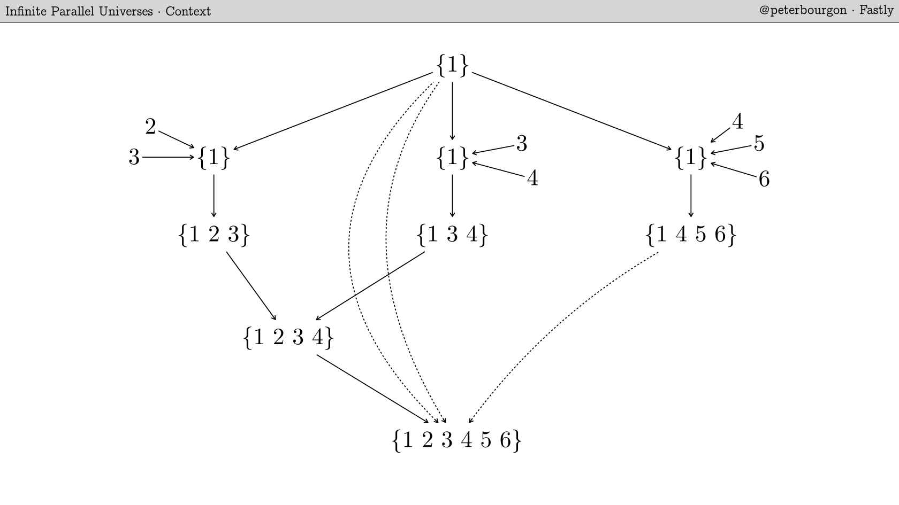
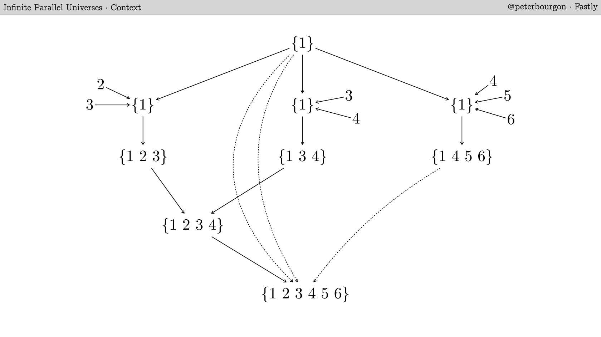
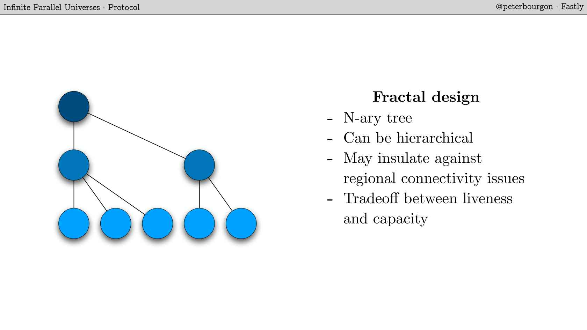
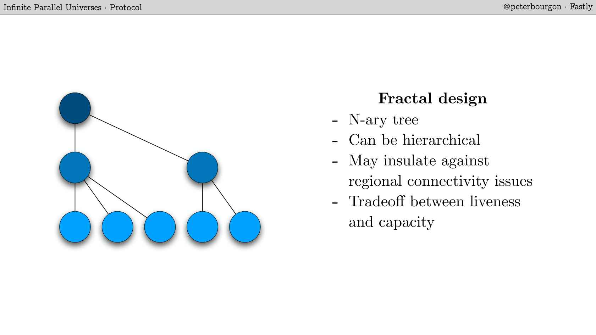

Transcript
Bourgon: Thanks for coming. This is my silly talk with all these cool science pictures on it. Before you ask, they don't mean anything, but I do feel like they give my talk a little bit of gravitas so I hope you'll take that into consideration.
This is going to be a walkthrough of a system that I'm researching and prototyping and building, and have been for a little while.
It's an analysis of some of the unique constraints that we encounter when we design systems of state that are supposed to live at the edge. We'll talk about what the edge means and how it's different than in the data center, let's say.
It's an analysis of how those constraints affect the design of the systems that you built and how they shape the decisions that you make.
I want to just say up front that this is certainly not the only way you could build a system like this. It's just one way, and certainly there are equally successful ways that take different considerations. So join me on this journey and we'll see what we can learn.
Here's the table of contents, so to speak. First, we're going to establish a bit of context about what we're doing at Fastly, particularly, but also maybe a little bit in general for edge state systems.
Then we'll move on to the architecture that we landed on, which is like the "boxes and lines" system model. We'll dive down one layer deeper than that â or higher than that? â where we talk about the protocol, how information moves through the boxes and lines. Then we'll talk about some complications, the tricky parts of all of this, and then draw some conclusions.
Fastly
I work for Fastly. Fastly is an edge cloud network and a content delivery network. In a few words, we make your websites fast. What that means, and how we do that has changed over time. It used to be we could be a pretty straightforward like a store of content, just kind of static content. As time goes on, that becomes insufficient â as your applications become more and more sophisticated, you demand more and more out of the CDN layer of your overall system.
To that end, pretty recently, Fastly has come out with this prototype product called Compute@Edge. This is a way for you to deploy software in theoretically any language to our platform via WebAssembly, which is a detail that's super interesting but I won't really get into here. You can deploy that to our infrastructure and essentially run your code in every HTTP request that we serve. Previously, you could do something like this with a language called VCL, which we support and you could do a lot with that. VCL is, by design, not Turing complete so you don't exploit our servers, and it's a little bit restricted in that way and can be a little bit, let's say, verbose.
With WebAssembly, you can, in theory, run anything, and we built a lot of stuff to support that to be safe and isolated and that sort of stuff. The most important thing that we've built and the thing that's enabled us to offer this as a product is this runtime, which allows us to cold boot your code on the order of 30 microseconds. This is orders of magnitude faster than anything else I'm aware of in the market. The leading cloud platform cold boot time can be up to like hundreds of milliseconds or something like this. This enables it to run in every HTTP request, which is super cool, it opens up all sorts of doors to interesting use cases.
At Fastly, I saw this being developed years ago and I thought, "This is very interesting". The question that immediately came up in my mind was, "If we provide compute at the edge, the next obvious question is, "What about state?" As soon as you can run CPU cycles, you want to be able to have access to data and do stuff in that CPU cycle. This is an interesting and hard question for reasons we'll explore. I want to explore what that means and some of the constraints that fall out of that question, and there are interesting properties of our architecture at Fastly of significantly influence the answer to this question.
We run these points of presence all over the world. In large part, they're isolated from each other. If we have a network connectivity issue that takes Japan off the map or something, that doesn't really affect the other points of presence in the world by design, and we have a world class network engineering team that makes sure this is true. If we start offering a state product, I guess it's important that the logical view of your state as a customer can be somehow globally logical. It's like a single consistent view of the state throughout the network, at least you want to be able to have that option and be able to opt into that.
If this is true, then the challenges here are actually not only difficult in an engineering sense but also in a fundamental sense, like a physical universe sense. The speed of light sets an upper bound on how fast information can move through the space. If you want to do a round trip basically from one antipode on the Earth to the other, it takes about, I think, 133 milliseconds â just physical laws. In some sense, that is completely incompatible with this number. This already introduces a fundamental constraint on our state system. How do we make this work?
What Are We Doing Here?
Now we can begin to state some theses here, what are we actually doing and what are we building here? This isn't going to be a general-purpose database. We don't have the the latency budget to be able to do that at large scale. If we want to operate in the request lifecycle, we have to necessarily only do reads and writes that are local to a given POP, I think. If that's true, then that necessarily implies that we're building this eventually consistent system at the global scale, where state conflicts are normal. In my opinion, we have to narrow the scope of what we're building, narrow the scope of the design, in ways like this, and begin to winnow in on something that isn't a full database. Maybe one way to think of it as a writable cache, which you could then connect to your origin database if you so chose, maybe.
Let's follow this train of thought a little bit further. Let's lean into these physical constraints, the speed of light stuff and let's think about the data model. In general, as application developers, we really like this abstraction, this concept of a single global truth. If I put something in my shopping cart on a server in Vancouver, I want to see the same shopping cart, with the same item in it, if I happen to connect from Melbourne. This has always been a fiction, because we always have to do engineering work to make this true, but that fiction, that abstraction, really begins to leak when we get to large physical scale. I think what we have to do is lean into the physical truth â the fact that we're having multiple simultaneous truths in all of these points of presence all over the world that converge at some point to some global consistent state, eventually.
State Primitive
This whole project that I've been working on has been, in some sense, an
experiment: if we accept these things as true, can we get a coherent system out of it? Can we actually make this work, or make it useful? I think we can and I think the thing that enables it is this state primitive called the CRDT. This isn't going to be a CRDT talk, but it is important to understand a little bit about them to make sense of the rest of what I'm going to say, so we'll go through it a tiny bit. I'm curious, has anyone heard of these before? OK, so I'll do this quickly.
They're a type of data structure, conflict-free replicated data type, that you can think of as they're just carefully constructed data structure paired with operations on that data structure, which are always associative, commutative, and idempotent. Which means that the operations on the data structure can combine in any order, including duplicates of the same operation, and as long as the number of operations are bounded, like a finite set of operations, you're always going to land at the same end state, no matter how you do it. Which is super important, but a little bit abstract. So let's go through two really quick examples to demonstrate what I mean here.
Consider the data type of an integer, and the operation of addition. We can see that addition is, of course, associative â this property is true. It is also commutative â that property is true. But if you add two numbers together, you don't get the same number again. It's not idempotent. And so this doesn't work, not a CRDT. Let's twist it just a tiny bit and instead of integers, let's think of sets of integers, and instead of addition, let's think of set union as the operation. It turns out this actually works. Set unions are associative in the same way, they are commutative in the same way, but it turns out they are also idempotent: if you set union a set with itself, you get the same set out of it again. So this is a CRDT.
Let's consider a situation where we have this set, and we split it into three data centers around the world, so we have three copies of what is initially the same set, and then we independently make some operations on each of them. We add two and three to this one, three and four to this, four, five, six into this one. Then at the end of this, we have three divergent states. At some point, we're going to merge them back together but at the moment, they are multiple parallel universes of state that are not the same. What we're able to do with CRDTs is that we can merge those states together, recombine them in any order or any combination, and as long as we merge everything together eventually, all of the divergent states end up in the same final sets at some point â and, of course, given bounded inputs to the whole system â we'll eventually arrive at that deterministic output.
This happens no matter how we recombine those states and extremely importantly, even if we duplicate the same merge operation repeatedly. Said in another way, it's always safe to merge two values of the same logical CRDT object together.
We don't have to do any coordination of order, or tracki what we've already done. The end result will always be correct, it'll never move backwards in time, if that makes sense. That idempotence will prove to be the most important thing of this design.
This thing happens to be called a join semilattice. Don't ask me any more questions about that because that is the extent of my knowledge. Yes, maybe you can use this in pub trivia later â no, probably not. A set of integers is just like a pretty trivial example. You'll just have to trust me that there are other CRDTs that give you more sophisticated things like map operations, or lists, or things like that. And so we can construct more interesting APIs than just this out of CRDTs.
Architecture
That's state of the edge at Fastly, or at least my motivation for this project, where that came from. We said this isn't going to be a database, it's going to be more of a writable cache. We've talked about how the speed of light necessarily constraints the design. And we talked about the state primitive of the CRDT as the thing we're going to build on top of â or try to â and see if we can get a system out of it.
Now I'd like to talk a little bit, just at a high level, about the physical architecture: how all these points of presence, OR state replicas, might interrelate to each other. Let's return to our network map here. We've already talked about one constraint, which was how the latency requirements of running each computation within the request lifecycle establishes a hard upper bound on how fast our operations need to be at the state layer.
I'd like to introduce another constraint actually, which is influenced by the fact that our data centers are not like the cloud, we don't have infinite disk or infinite CPU like the good folks at Google do. I don't know how they do that but they do, but we don't have that luxury. We have physical machines and physical data centers and they have finite resources. The access patterns that people use in, say, Tokyo versus Amsterdam are not going to be exactly the same, and it would be silly to put out all the data for all customers â because it's a multi-tenant system â in every point of presence. We can't really do that. So we need to have data live in each of these points of presence according to some usage, according to some need. Therefore, we need to have some concept of how to populate data in a point of presence that it doesn't have. This is all a bit hand wavy, but the point is not every point of presence can have access to all the data all the time, there needs to be some kind of distribution concept.
In the old CDN world, we had it pretty easy, because as a customer, you always gave us your origin, so we always had a source of authority, we knew we could go to you to get the information. But in this world, there is no origin, necessarily, because we are both the provider of the data and the host of it, Fastly is. So we have to think about this a little bit more carefully. There's no obvious solution here and when that's true, I like to map the space a little bit, a little bit of lateral thinking.
Let's say that these are some of our points of presence. How do we think about the relationship of each of these with regards to where the state lives? I don't know exactly the right answer, but I do know some points on the spectrum of how we think about state, and so let's maybe think about the extremes of that spectrum.
One extreme might be â again, this might not be the only answer but this is something that many of us are familiar with â is in typical database replication strategy land, we will have sometimes this idea of a write primary, through which all write operations are serialized, put into some sort of bin log maybe, and then replicated out to read replicas. Also, a lot of leader-based consensus protocols work this way, like Raft, for example. We would elect a write primary and proxy all our writes there. This does satisfy some criteria, but not important ones for us, it's just a point on this spectrum. Namely, it doesn't satisfy the local read/write criteria. But it's one way many systems work, so we can think about putting this on the spectrum. Maybe if we could have a central write primary somewhere, maybe in the cloud, we could treat all of the sites, all the points of presence as, in a sense, read replicas. OK, it doesn't quite work but it's a point in the space.
OK, so that's one point. Maybe we consider as far away from that as possible, what is the other way sites may relate? What's the furthest away from this concept of state replication? Maybe that's something like a gossip network, where there is no single source of authority for data, where all of the replicas are like peers in a decentralized network, and through some sort of gossip protocol, SWIM or whatever, they would connect to everyone else and use some sort of strategy to communicate state updates. That's very hand wavy, and it raises some concerns and questions of its own. First of all, it requires a lot of connections. Every server and every point of presence would have to connect to at least some, and maybe all, other servers in our network, that maybe is wasteful. Also, it doesn't give us a good answer to the question of where objects live. Previously, we knew objects always lived in the write primary, and so we could always just go there, conceptually, if we needed information.
But here, we don't have those guarantees, kind of by design. If somebody wanted to ask for an object X and we didn't have it at one of our sites, we could send a broadcast and say, "Can someone please give me X?" Then, the gossip protocols guarantee at some point there's an asymptotic upper bound to when you're going to get an answer, but it's hard to communicate that in a document to a customer, like, "Yes, you'll get your object eventually." That's not wonderful.
Also, it's not really clear how objects propagate through the system. Again, there is somehow a guaranteed asymptotic upper bound that everything is going to see all the state updates eventually but, again, not really what we're after.
These might be two extremes of the architectural spectrum, strictly hierarchical and peer-to-peer decentralized. Now, maybe we can think of is there something that's in between that might satisfy what we're after?
I think maybe something like this might work, which is to say we'll have this central authority hierarchy, almost a hub-and-spoke model, but we'll keep all our reads and writes local. So, all the reads and writes stay within the POP and then, at some point, we can maybe async forward that information up to the hub, up to the root here, what I'm calling the upstream. In that way, it becomes a source of authority, eventually, for all the information, and becomes the place that all the other sites can ask, eventually, for their objects, if they don't have them.
I'm waving my hands here because this is not fully realized, but maybe something like this can work, and it produces this architecture where it's kind of like an LRU cache. We do all our transactions locally, they eventually propagate up, and if other things need it, they know where to go.
OK, maybe this is enough to run with, so let's see if we take this very hand wavy architecture and see if we can talk about a protocol that satisfies all our criteria, like a communication protocol. Let's move on to that.
Protocol
We have our operating context, we have a tentative high level system architecture. Let's talk about how data moves through the system â and here's where the properties with CRDTs become really useful. Let's talk about the protocol here.
Let's talk about it in the context of this really simplified system diagram. In this model, we have A, B, and C, where A and C are two sites, two points of presence in the Fastly architecture, and then B is our theoretical infinite cloud-backed upstream, or whatever.
The first question is how do objects move from A to B? We assume that over some period of time, a site has received some operations, read and write operations for objects, and at some point, they need to move up to the upstream. What we can do is think about chopping time up into little time-epochs, like a second, or five seconds, or a minute, or whatever. In a given epoch, we can track all the objects that have received any sort of operation, read or write. We're going to batch all those objects into a batch and we're going to emit it up to the upstream at the end of the epoch. And then every epoch, we're going to just do this again and again. I think that covers our bases. As long as we do that with some regularity and with good faith, all of the information in our site is going to get up to the upstream.
That's half of it. The other half of it is like how do objects get from the upstream to different sites? Here, we have to keep in mind: only those objects which the site cares about, in some sense, should get down there, we shouldn't send everything down because that's wasteful.
I think the wrong answer here is for the upstream to push objects down to the site, because how does the upstream know what the site needs? It doesn't really, not without some additional information.
The key insight for me was that the sites themselves know which objects they want. By definition! They will have received an operation for that object.
Someone wants to read an object, it will ask for it, and I may not have it right now, but I know that I now have interest in it.
Rather than pushing objects from the upstream to the downstream, instead, C can ask for the objects that it wants from B. This operation, pulling objects down, let's call it Sync, and it turns out it can be exactly the same operation that we use to push objects up.
In both cases, we're sending a set of objects that have recently been requested or have received interest. In one case we're sending and in another case we're receiving but that can be the same thing, we can do that in both cases, the latest version of those objects, and we synchronize them between us and the upstream. I want to walk through what that looks like and we'll see how CRDTs come into play here.
Here's a very simple example. Let's say this is our site, we have a set of objects that have received operations. Somebody has written Key 1 equals Value 1; someone else maybe has requested Key 2, we don't have that yet, so that's a read miss; and someone else has written Key 3 equals Value 3.
Here's our empty state and this is what our state looks like after these operations. We know about two values, but in addition, we have this other thing, which I'm going to call an interest set, which is not the values, just the keys and it's all the keys that have been requested in any way.
Here comes the end of our epoch and it's time to do our little synchronized dance. What we'll do is we'll combine the state and the interest sets and we'll create something called a SyncRequest. Every epoch, we can generate one of these, which contains all the keys and, if there are values, all the values that have been transacted in that time epoch. We do that and we ship it off to the upstream, and when the upstream gets it, it's going to take it and compare it with its own state. Let's say the upstream has been running a little while. It already has a value for K1, let's say it's V5 â it doesn't really matter what it is, it's something. It also has a value for K2 â that's fortunate for us because we don't know about it yet. Let's say the upstream also has some other thing, K4, whatever, it's not relevant to this discussion but there it is.
What the upstream is going to do is it's going to take its state and it's going to merge in â remember, CRDTs always support this merge operation, and importantly, merge is always safe as long as we're talking about merging the same logical object together â and it's going to merge all the SyncRequest, all the state in the SyncRequest into its internal state, and it's going to come up with this new state. K1 is going to be the result of the merge of V1 and V5 â we called it V8, it doesn't matter, it's just some new state. K2 doesn't have any new information in the incoming request, so it's going to stay the same. K3 is brand new, it's never seen K3 before, so it's going to merge it with the empty set and it's just going to take the incoming value directly.
At the end of this merge operation, we have a new state in the upstream. The upstream is going to say, "Thanks for those three keys, I'm going to now return to you the same three keys and what I think the latest state is for each of them." It's going to send a SyncResponse of exactly the same size, three keys, this time three values, back down to the site, and the site is going to do exactly the same merge dance that the upstream did. It's going to merge all the response values into its local state. You can track this and you can see that at the end of this process, for all the keys that were part of this request/response, we're guaranteed that their state is going to be identical in now the downstream and the upstream. And it's CRDTs which give us this property.
We know that if we have two versions of a value and we merge them together, no matter what else is going on, the thing we get out of it is going to be deterministic, and it's going to be the same on both sides. Idempotence, commutativity, associativity, so that's cool. At the end of all this, the state is synchronized between the two sites.
What are some properties of this operation, which are nice? First of all, it's synchronous, of course, and by that I mean it's an RPC. It's literally like request/response and we're waiting on both sides for everything to complete.
This is super useful, I don't know how many of you have designed a number of distributed systems, but async, event-source, event-driven stuff is really tantalizing until you start getting into the weeds of it and it becomes revealed, at least in my opinion, that it's much nicer to have synchronous calls.
You can really reason about the state of the system a lot more easily, and you eliminate huge classes of failures just up front, so that's really nice. It turns out that this synchronize operation is robust enough that it can be the only way that data moves through the system. I won't get into all the details here but it turns out that this is true. We don't need any other operation, besides the operations that users request, to move data between entities in any part of the system, which is really nice.
It turns out that it's bandwidth minimized. By this, I mean that if there is one key which is really hot in a site, and it receives a ton of operations, then you're only going to send the result of this operations. At the end of the epoch, you're going to send one value â it's whatever happens to be the end result of all the local ops. You don't have to send 1,000 operations, let's say, you just send 1 value, which can be quite nice.
It's also data set minimized, by which I mean if a key doesn't receive any operations in a given time epoch, then it doesn't get sent up, we just assume everything is fine, which is also nice. We have this concept of an authoritative upstream, so we always know where to go if we don't have information. Every site is configured with an upstream, and if I don't know about a key, then I know at the end of the next time epoch, if the upstream knows about it, I will too.
More properties â this is actually quite interesting too. The schedule is flexible, meaning the time epochs can be a second, or a minute, or a year, and it doesn't impact the correctness of the system, it only impacts the liveness of the system. Meaning, if I wait a really long time to do a Sync, I'm going to be out of sync with the rest of the world, but when that Sync happens, I'm going to be brought up to date, because of the CRDT properties, without any special accounting, without any special work. It's just going to do what it should. If my application isn't resilient to being out of sync for that long, that may cause problems, but if it is, then I'm good.
Importantly, in a similar way, missed Syncs impact liveness, not correctness. If one of these sync calls fails, due to a network partition or whatever, I don't really have to do anything. I can just say that in the next sync, I'm going to have a bit more data, because the previous one didn't work, but otherwise, I don't have to go into some fallback mode, I don't have to enter some weird retry loop. I can just wait until the next one, and it's all fine.
This is so useful in that, maybe the hardest part about distsys is fault management, fault recovery, and CRDTs and this Sync business give us a way to not really have to worry about it. We should know about it, as operators â we should say, "This site hasn't synced with this upstream in a week, so this is a problem," but I don't have to do anything special, aside from pester my network people to fix the problem.
It is eventually consistent, as a property of all this, and quiet by default, meaning if a site doesn't receive any operations, it doesn't waste bandwidth sending stuff around. It sounds really cool, it sounds really nice. I'm going to spend a little bit more time talking about how really nice it is and then I'm going to peel back the curtain and show all the problems that I'm papering over with my hands at the moment.
Let's talk a little bit about other nice properties with a Sync and in order to do that, I'm going to take away some of the abstractions a little bit. We've papered over some details here, we've talked about a site and an upstream as if it's just a single thing. Of course, that's not true, each site is composed of many servers, or instances, or replicas. There's lots of terms of art for this. First of all, given a site is not just a single machine, how do user requests work? When a user makes a read or write, what happens? Do we need things within the site, like key affinity, or a dynamo ring, or any of these other typical tools of the trade of distributed systems?
Interestingly, I don't think so. Each user request is always dealing with a single object. We can take that object's key and consistently hash it to a certain number of replicas, where N is the replication factor. Essentially, N determines how many nodes we can allow to die while still being able to serve requests, while still being able to operate. We do this hashing, notably within the user-facing API of each instance, so all instances in the cluster are essentially identical from the perspective of the user.
The request is proxied to those N replicas, which should own that key. The replica applies the operation. If it's a read, it just reads the object out of its local state; if it's a write, it performs the mutation and then returns the resulting object. And, importantly, completely independently of all the other replicas that are doing this at the same time.
The response, which is a CRDT, gets gathered back at the node that received the user request, and then merged together. Because merge is an operation we can do as many times as we want, with no negative consequence, we can merge them all together, and then return the result to the user, who then interprets it. For example, if it's a write of some arbitrary value, we just extract the value out of this CRDT and then return that.
In the normal case, this re-merging of all the discrete replicas is a no-op, because ideally, all of the CRDTs are exactly the same, because the network has been good and everyone has seen all the operations and everything. But if one replica has a more up to date version of the object, for whatever reason â maybe because its peer was briefly out of service, or had a long GC pause time, or something â that version is going to win in the merge. So the user is always going to see the most up to date version of their object, as long as at least one node in the cluster has that most up to date version, which is nice. Check it out, knowing that the final union CRDT is definitely the most correct version for that request, we can then compare that final merged version with all of the other, independent versions we got back from all the replicas. If there's any discrepancy â and we don't care about what the discrepancy is, all we care about is, is it exactly the same or not in comparison â then we know that for whatever one it wasn't equal to, we know that that replica is out of date, it's discrepant. We can fix it very easily, by sending a SyncRequest with a single object in it, which is this merged version. And we know that if you merge a version which is more up to date with a version that is less up to date, then you're just going to get the more up to date version again.
This is like automatic read repair in each user request, which falls automatically out of the properties of CRDT, so that's super cool. That's user requests. Let's talk about syncing a little bit. Do these N replicas in a site have to do some coordination in order to sync to their upstream?
Again, I don't think so. Observe that each instance is going to have a different set of objects just as a natural byproduct of this consistent hashing N ways. But also remember that CRDTs tolerate over-merging. If I merge the same objects repeatedly together into another target object, it's going to be fine, CRDTs give us that property.
So it turns out that instances can just sync whatever happens to be in their state, whatever objects they happen to have, to their upstream completely independently, on whatever schedule they want, it doesn't matter, and the upstream's state will converge to stability, again, just as a natural byproduct of all these properties.
If we wanted to give each instance a totally different sync schedule, like 3 seconds, 5 seconds, 20 seconds, it would be silly, but we could do it, and it wouldn't be wrong, eventually the system would be just fine. That's quite cool.
Again, the upstream is just like any other site, any other point of presence.
It is also comprised of all these individual instances, not just a single, monolithic thing. How does this mapping work? Does each downstream instance have to copy its syncs to all the upstream instances?
Again, I don't think so. You can think of a user request as dealing with a single object and then it's one of many operations: read, write, Bloom filter insert. Sync, then, is many objects with the same operation: it's always merge. So we can model a sync call just like a user call, essentially, except instead of scattering and gathering one CRDT, we're scattering and gathering many CRDTs performing the same operation. In this way, the sync receiver is just like a user request receiver. Every instance in the cluster is identical and calling any of them will have the same effect as calling any of the other ones.
It turns out that any downstream instance can choose any upstream instance to do its syncs and the behavior will be the same. We could even stick a load balancer in front of it and do it that way. We don't need affinity, we don't need any sort of ownership, we don't need to rebalance anything at any point, we can just do whatever we like here and it totally works.
Still, even cooler, if an upstream is just like a site, then it seems reasonable to say it, too, could have an upstream. Indeed, this is true, we can build this fractal design, this N-ary tree, where we could have a hierarchy of upstreams. Maybe we want to put an upstream in us-central-1 and an upstream in eu-west-2, or something like that, and then have a global upstream that sits on top of them, and in this way, maybe isolate connectivity issues between regions in the world.
We would be trading off liveness and capacity for resilience â so if this is true, you can imagine rather than taking one epoch to get information up and then another epoch to get it back down again, it might take two epochs, one here and one here, and then it would flow back down and down. Maybe that's desirable, maybe it's not, but the system design allows it, and that's quite interesting too.
I could go on a bit more but just in the interest of time, I want to observe that all of this cool stuff is enabled by the smart primitive of the CRDT. The design of the system that falls out of it is really simple to think about. You have to understand CRDTs and how they work, but we get all this nice stuff. The single operation for moving data around. The fact that we don't have to coordinate between anything to get this thing to work properly. And most importantly, I think, that faults require no special handling to be resolved. They just need to be retried and then everything is fine. All this from CRDTs and none of it, importantly, that requires any sort of sophisticated engineering, really. The code that does all this is really straightforward.
Complications
It sounds really nice. It's not all that simple, of course, so let's talk about some of the complications here, the things we have to think about that maybe require a bit more engineering effort, a bit more design thought.
The first one is the concept of the read miss. If you're in a site, the first time you read an object, even if it exists somewhere else, you're going to have a read miss, it's likely going to miss.
We have this guarantee that it may appear later, but, as a user, if you request something, so far as I've described the system, it's going to be not found, and then if you ask me again in a few seconds, it might be found then.
This is maybe not the best user experience, depending on what the application wants. There is a workaround. An approach might be that if you have a read miss, what you could do is, say, within the request lifecycle, block and make a SyncRequest, again, to the upstream for this single object, and see if you get it back. For some use cases this might be the right approach. You're going to spend a bit of your latency budget to do that, but maybe if preventing a read miss is important, that might be worth it. We can do this, I don't know if it's the right answer in all cases.
Another complication is API design. I've hand waved this a bit, but CRDTs can be non-intuitive to program against as an application person. It turns out that applications really like this fiction of a single global truth. You want to be able to make a globally atomic transaction and just have it work, and a great deal of engineering effort has been spent in many other products to prop up this fiction. My claim is that it doesn't work, that it fundamentally doesn't work, and we need to move beyond the model in a Newtonian physics to relativistic physics sense, like the scale changes and our models need to change as well. This is my claim. But it's not clear that that claim is going to work in the market, or it's going to be commercially viable. It turns out the general-purpose CRDT-based state layers â it's not obvious how to make these work.
I think the approach is we have to scope our APIs pretty narrowly, at least to start, and see what gets traction, and see what people are comfortable with, and then over time, make them a bit more general. This is a guess by me. I think it's necessary, but we'll see if it's going to be sufficient.
Another complication is resources. If you have worked with CRDTs at all before, you will know this is true. In our system model as we've described it so far, reliability, we get it, basically by duplication of effort. I've repeatedly said we can merge the same CRDT together over and over and it's correct, and that's true, but every time we do that, we're burning a little bandwidth and a little CPU, which, strictly speaking, we don't need to do. Maybe that is going to prove prohibitive in some sense.
Also, CRDTs aren't free. If you're storing like 50 bytes or something, you're going to spend a lot more than 50 bytes in the CRDT representation of that information. Again, this is just the cost of doing business in this highly physically distributed world, but it may be true that this is prohibitive as well. The approach here is just we have to pay careful attention to it, we have to cheat in intelligent ways when we can, and this is more art than science, let's say at the moment, because although a lot of people are working really hard on this hard problem, I don't think we have well-defined answers to it yet.
That's part of the cost of doing business at the bleeding edge here.
Finally, we have this complication with quantum entanglement. Does anyone know quantum theory? Probably not. I read a really short book about it. It turns out that quantum entanglement, it's like getting entangled to quantum bits and you spread them apart and then a state change here and it's instantaneously visible over here just renders all this irrelevant. If anyone figures out how to make quantum computers work, then, pro, we get instant, easy, instantaneous communication of information invariant to distance via breaking the speed of light rule. The con is that I'm out of a job and the system is irrelevant, so if that happens, great for the world, bad for me. There's plenty of more complications but those were the fun ones for me.
Conclusions
Quick conclusions â and really it is just one-page of conclusions. State at the edge is where we started this whole journey. In my opinion, state at the edge, the way of thinking about it, starts with the foundational understanding that there are inescapable constraints at large physical scale, imposed by the speed of light. In this world, our old abstractions, namely the concept that there should be or is a single global truth in our state system, it just falls apart. What we need is new abstractions. We need to lean into these invariants, this concept of there being multiple parallel truths in the different physical locations of our system.
The only way, in my opinion, that we can build systems that are coherent in this new model is by leveraging much smarter primitives like CRDTs. All this stuff I described is not due to some brilliance by me or some incredible engineering effort. It's just the natural stuff that fell out of my decision to use this much more sophisticated and smarter primitive, and all these nice properties that we need at scale, in my opinion, just became very easy in that sense.
In my opinion, reliable systems require more robust primitives. In my opinion, the future of large scale just isn't about consensus rounds, or leader election, or distributed locks, or distributed transactions. I think these are all dead ends, essentially, and I think what we need, and what will prove to be true, is that all systems that are going to work at this scale are going to be simple, redundant, low coordination communication systems, which will not demonstrate an immediate global truth, but will converge towards that kind of outcome.
That's my belief, that's my thesis, that's my argument, and that's my talk. Thanks for coming in and paying attention.
Questions and Answers
Participant 1: You mentioned that every node in the system is equal to each other, so does it mean that every node potentially holds the whole data of the system? Because they are replicated from all other nodes, so, potentially, especially upstream nodes will have all data of all other points of presence in the system.
Bourgon: The right way to think about it is, a given cluster of nodes will necessarily have all of the data from all of the nodes that are downstream to it, but a given instance in that cluster is going to have only a fraction of the data, so it'll have whatever the data is divided by however many nodes are in the system, multiplied by the replication factor.
Participant 1: Ok, so inside, there actually is ownership of all of the data between instances?
Bourgon: Yes, there is ownership, the important part is that there's no knowledge of ownership, it's just a natural function of the hashing of the key.
Participant 2: In your experience, what are the most surprising data types and operations you've discovered that you can model with CRDTs?
Bourgon: A lot of interesting probabilistic data structures happen to be CRDTs almost by accident, like Bloom filters and HyperLogLog and count-min sketch. It turns out these are actually just natural CRDTs by the way they're constructed, so that was very surprising to me. One area of active research, CRDTs can be often difficult to program against and so we're searching for the right general model, like what we can build as a CRDT that's more intuitive and there's active research into making basically a JSON object into a CRDT. This is not all the way there but Martin Kleppmann and the Automerge community are doing the work there, which I think will be very interesting when it pans out.
Participant 2:
May I ask one more? How do you make sure that when you gather the responses to service the request that at least one of the nodes is up to date? How do you make sure of that?
Bourgon: In terms of like how do I do it quickly or how do I ensure that the data is correct?
Participant 2: How do you do it quickly?
Bourgon: This is an interesting little optimization. Every user request is essentially a scatter gather to all the nodes that own it. In order to serve a response, we need to get at least one response back; ideally, we'll get all responses back. The optimization is you wait for the first response, however long that takes. You race, essentially, all the nodes, whichever one responds first. At that point, you start a timer and the timer is very quick â 50 milliseconds, 100 milliseconds. Every other response that comes back in that amount of time, great. If it takes longer than that, too bad. That's how we establish a latency upper bound.
Participant 3: You mentioned the SyncRequest is itself synchronous, so the site will sync up to the upstream, and that'll happen synchronously. Because we're using CRDTs, what would be the advantage of doing that synchronously, as opposed to async?
Bourgon: The point of sync and not async is simply that when I make the call, it is like an RPC. While that's happening, other stuff is still happening in the local state so it is like async in the broadest sense. It's just that in order to reason about how sync calls work, they're just like RPCs, rather than event publishers or something like that.
Participant 3: The site is not blocking, it's still receiving updates?
Bourgon: Yes, correct.
Participant 4: On one of your last slides, you talked about some of the reliability compromises. You talked about those clever ways to cheat reliability issues. Could you go into more detail on them? Specifically if you're using consistent hashing at the edge site clusters that can result in hot keys, hot keys can result in a storm of sync events going upstream, what are some strategies you're thinking about for mitigating the reliability impact on the upstreams?
Bourgon: A lot of this is TBD, because a lot of it is driven by usage patterns, which we don't have yet, because we haven't released the product yet. I have ideas actually about how to mitigate the storms and thundering herds and that sort of thing but none of them that I can say are the answer.
Participant 5: Don't worry about the quantum entanglement, but it's also the physics, the information doesn't break the speed of light. You're playing in this interesting space that you've moved the problem up to a serializable problem on the business logic that sits on top of this. Where is your thinking going in that space?
Bourgon: That's the hard question, application builders who use us as a platform, are they willing to adapt to this model? It's not clear that the answer is yes. There are ways to ease them into it, and best example is, the thing you want to build on this, by default, is a key value store, everyone wants a key value store. The easiest way to do a key value store is an API that's set and get. And we can provide that, but unless you give a little bit more information, the set function is going to have to make some simplifying assumptions. If two people in Japan and New York set exactly the same key at exactly the same time with different values, there's not enough information in that API request to make a safe merge in the CRDT sense. What we have to do is automatically attach a sort of timestamp, and we set in what's known as the Last Writer Wins Register, and essentially, we're going to just decide for you which one wins. It'll be deterministic, it'll be safe, but from the user point of view, it'll be one of them, and you don't really know which one. That's fine for some people, but for other people, this isn't. If you need a more powerful, more deterministic â if you want the control of which one wins, then you have to move up to something called a Multi-Value Register, which uses dotted version vector sets, and this complicates the API, you have to track this opaque thing called a causal context, and the get doesn't return one value, it returns multiple values, and you have to decide which one wins. We can provide that too, but for a lot of users, that's going to be, "What is all this nonsense?"
Participant 5: Are you stepping into the Lamport vector clock space?
Bourgon: There's a number of different things that we implement already, one of them is the vector-clock-backed, multi-value register, but we don't use the word Lamport clocks, it's just this thing you have to receive from a get call. It's kind of how Riak worked, if you're familiar with Riak. You just have this opaque causal context that goes with it. Maybe this will be useful for some people, maybe they'll need it, and I think as applications become more sophisticated, more and more people will realize this is necessary. But at the moment, many people don't, I don't think. We have to ease them into it, is my approach. Start with the simple one that loses information sometimes, work your way up to the more advanced one, if that answers the question in part.
See more presentations with transcripts

.jpg)

 
 

Community comments